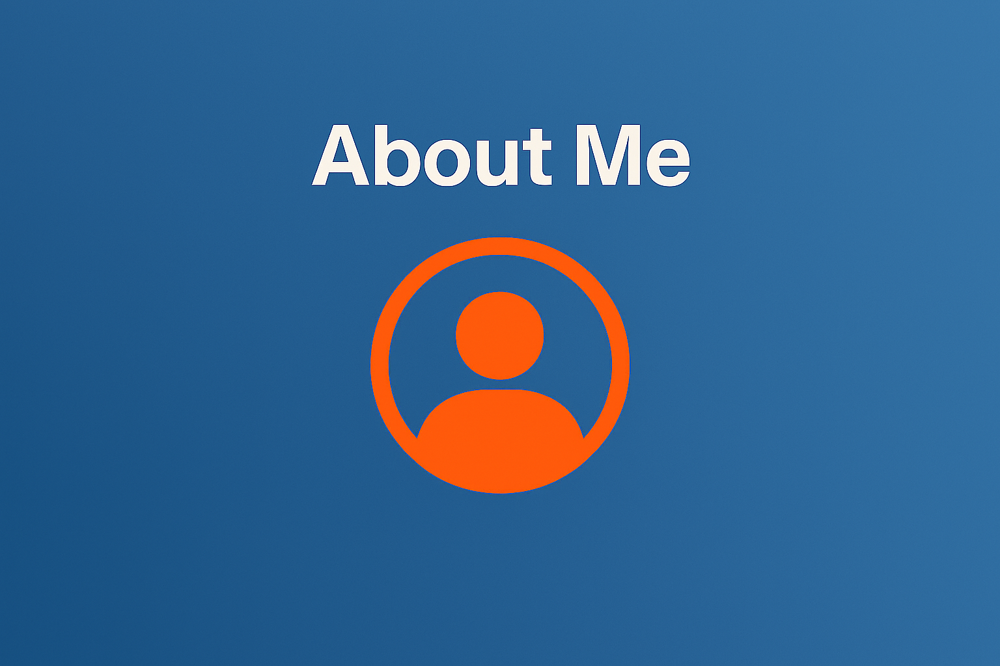
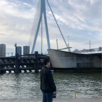

Mijn naam is Amiro Salhi en ik ben een gemotiveerde student aan het Techniek College Rotterdam.
Ik volg momenteel de opleiding MBO4 Software Developer.
Ik heb een sterke interesse in IT en technologie.
Mijn doel is om mij verder te ontwikkelen tot een professionele IT-specialist.
Ik heb een opleiding gevolgd binnen IT Systems and Devices aan het Techniek College Rotterdam.
Tijdens deze opleiding heb ik een brede basis gelegd in IT-systemen en technologie.
Daarnaast heb ik kennis opgedaan op het gebied van bedrijfsbeheer en administratieve processen.
Deze combinatie geeft mij een veelzijdige basis binnen de IT-sector.
Ik beheers meerdere talen die mij helpen effectief te communiceren in verschillende situaties.
Nederlands en Engels beheers ik op een goed niveau, zowel mondeling als schriftelijk.
Deze taalvaardigheid stelt mij in staat om samen te werken in diverse omgevingen.
Ik blijf mijn communicatieve vaardigheden verder ontwikkelen om professioneel te blijven groeien.

Ik heb praktijkervaring opgedaan tijdens meerdere stages binnen verschillende organisaties.
Zo heb ik gewerkt bij de servicedesk van Zadkine, waar ik gebruikers heb ondersteund.
Daarnaast heb ik stagegelopen bij SIPOR en een basisschool in Rotterdam.
Tijdens deze ervaringen heb ik mijn communicatieve en technische vaardigheden verder ontwikkeld.
Ik beheers programmeertalen zoals HTML en CSS.
Momenteel ben ik bezig met het leren van JavaScript om mijn kennis verder uit te breiden.
Ik richt mij op het ontwikkelen van websites en applicaties.
Mijn technische vaardigheden blijven zich voortdurend ontwikkelen door studie en praktijkervaring.
Ik heb verschillende certificaten behaald, waaronder een Pressure Cooker certificaat via Digiwerkplaats Rijnmond.
Daarnaast heb ik deelgenomen aan het MDT Treasure Hunt programma van Netwerk Nieuw Rotterdam.
Deze ervaringen hebben mij geholpen om mijn vaardigheden in een sociaalgerichte omgeving te verbeteren.
Ik blijf actief zoeken naar mogelijkheden om mij verder te ontwikkelen binnen mijn vakgebied.
Ik ben een leergierige en gemotiveerde persoon met een sterke interesse in technologie en IT.
Ik werk gestructureerd en neem verantwoordelijkheid voor mijn taken.
Daarnaast ben ik sociaal vaardig en kan ik goed samenwerken met anderen.
Mijn ambitie is om mij continu te ontwikkelen en waarde toe te voegen binnen mijn vakgebied.